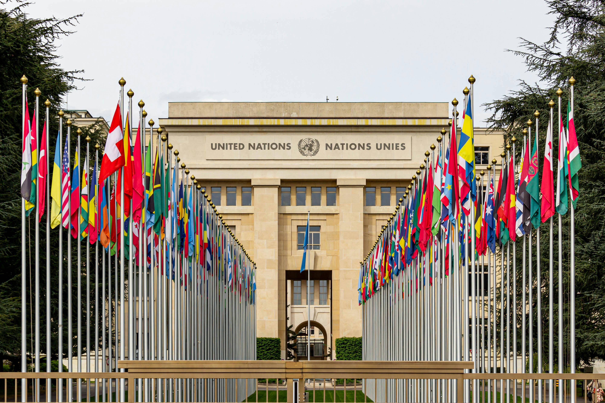
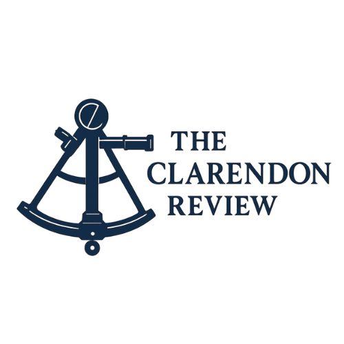

Summary
Rory Gaukroger
Highly motivated, proactive candidate, searching for a career to build following graduation from the University of Portsmouth in July 2024. Strong work ethic and dedication to tasks, committed to outstanding service and the achievement of high value results. Strives for excellence in every undertaking, supported by discipline, attention to detail, and a focused, adaptable approach to planning. An ambitious team player, someone who thrives on building new relationships with people from a diverse range of backgrounds and skill sets - eager to learn and apply all valuable knowledge, practical insights, and experiences that may be of use to him in his career.
High Ticket Sales
Experience in closing high ticket sales for a bespoke tailoring company operating in Frankfurt involving attending meetings with clients, upselling, and finalising orders. Clients included individuals working in major banks, consultancy firms, and law firms. Onboarding new clients, managing existing accounts, and handling adjustments on orders in a highly personal field. This was part of a selection process for a job that was offered, but was declined due to the terms of the contract. Otherwise the experience was of great value, and would make for a credit to any client services role.
Customer Service
Student customer service contract (stock replenishment, resource management, and handling transactions), reporting directly to store manager at Tesco from June 2021 until present. Much experience of customer service in varied contexts, having worked in both a city store - Southsea Express, Portsmouth; and a superstore in a more rural town - Tesco Dorchester. Values Award, March 2025, for great customer service based on customer feedback.
Security Analysis
Produced written security and risk analysis for Crisis24 as part of a hiring process in June 2025. Feedback from the Global Operations Head of Security described the work as ‘very strong’, ‘a clear demonstration of analytical skills’, and ‘impressive’.
Political Analysis
Writes political analysis for own independent portfolio of articles, started last month in spare time. So far this has mostly concerned UK international trade, but this is a scalable project that will soon hopefully cover a wider range of topics. The intention at the beginning of the project was to explore and explain Britain’s foreign policy position in regard to trade and geopolitics.
BRNC Candidate
Final selection candidate for Britannia Royal Naval College, within the pathway of Logistics Officer. Selection required particular aptitude for analytical skills, mathematical ability, and high work rate under pressure. Experience of high pressure team exercises coordinating logistical assistance in an emergency scenario.
Stagiaire Chef
Stagiaire commis-chef, assisted with preparation and service in a Michelin-star kitchen on a short-term basis (February-March 2025), gaining insight into high level culinary practices. This was an unfamiliar field, and a huge challenge in which a fast rate of learning, adaptability and capacity for teamwork was demonstrated. Fine attention to detail, precision, and discipline were exhibited.
English Tutor
Independent freelancing as an English language tutor (November 2024, February - March 2025), working particularly in exam preparation at university level (B2) and for the Cambridge exam board. This required initiative, the proactive use of Italian language skills in order to find clients, and a learned familiarity with the specification of the exams and teaching methods.
Achievements
ABRSM Grade 2 Piano
Rock School Grade 3 Guitar
RYA Practical Sailing Competent Crew
RYA Windsurfing course
RYA Youth Sailing Scheme stage 3
Education
Thomas Hardye School: 11 GCSEs. 7(A) in Mathematics and 6(B) in English language.
Thomas Hardye Sixth Form: 3 A levels in Biology, Chemistry and Economics
University of Portsmouth: BA (Hons) International Relations with Languages.
Graduated in July 2024 with a 2:1.
Interests
Key areas of interest during the final year of study included: Global Security in the 21st century, Global Capitalism: Past, Present and Future. Those of second year included: Russian and Eurasian politics, and Soviet history. Assessments included writing policy briefs and highly specific research projects. Examples include a mock policy brief to the UK government in response to the Beslan attack in 2004, and a theme analysis of Soviet relations with Central Asian Basmachi rebel factions during the Russian Revolution.
Dissertation topic in the final year related to the Chinese ‘Belt and Road Initiative’ and the effect that the initiative had on world geopolitics since its beginning in 2013.
Long term interest in languages: fluency in Italian, intermediate knowledge of French, lower intermediate knowledge of Russian. Participated in the Institution Wide Language Program for interest during degree studies. Interest in Classical Literature, and enjoys travelling and experiencing other cultures: particularly Russia (February 2020) and Georgia (January 2023). Interest in music, both writing and performing. Participated in open mic events in Southsea, and in recording sessions at Portsmouth’s Eldon building.
Contact
RoryGaukroger[at]gmail[dot]com
[mobile number]